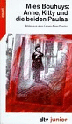
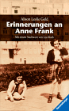
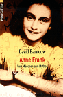

 | Anne, Kitty und die beiden Paulas. Bilder aus dem Leben Anne Franks. Mies Bouhuys Taschenbuch - 154 Seiten (1994) DTV, Mchn.; ISBN: 3423780584 |
 | Erinnerungen an Anne Frank. Nachdenken über eine Kinderfreundschaft.
Alison Leslie Gold Gebundene Ausgabe - 126 Seiten (1998) Ravensb. Buchvlg., Rav; ISBN: 3473351857 |
| Anne Frank. Die letzten sieben Monate. Augenzeuginnen berichten. Willy Lindwer Taschenbuch - 245 Seiten (1993) Fischer-TB.-Vlg.,Ffm; ISBN: 3596116163 |
|
| Geschichten und Ereignisse aus dem Hinterhaus.
Anne Frank Taschenbuch - 170 Seiten (November 1993) Fischer-TB.-Vlg.,Ffm; ISBN: 3596120969 |
|
| Anne Frank. Spur eines Kindes. Ein Bericht. Ernst Schnabel Taschenbuch - 159 Seiten (1996) Fischer-TB.-Vlg.,Ffm; ISBN: 3596134870 |
|
 | Anne Frank. Vom Mädchen zum Mythos. David Barnouw Taschenbuch - 128 Seiten (1999) Econ TB Vlg., Ddf.; ISBN: 3612266209 |